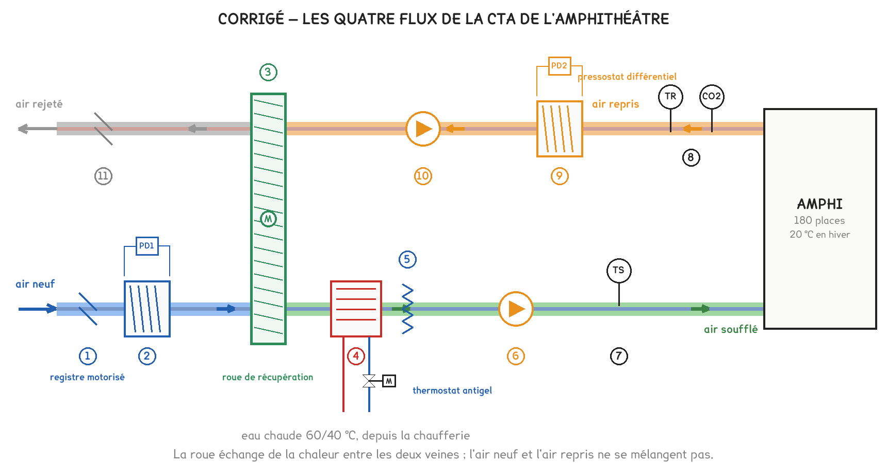
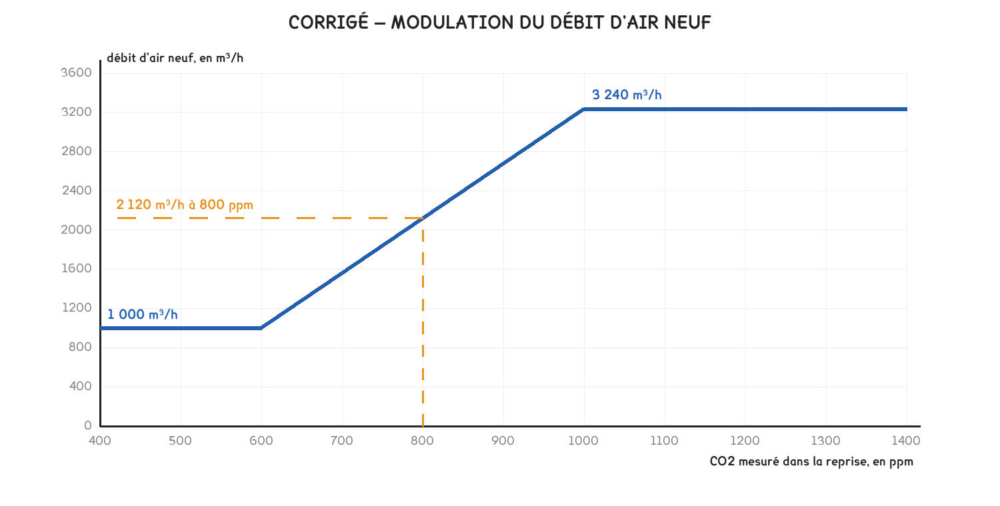
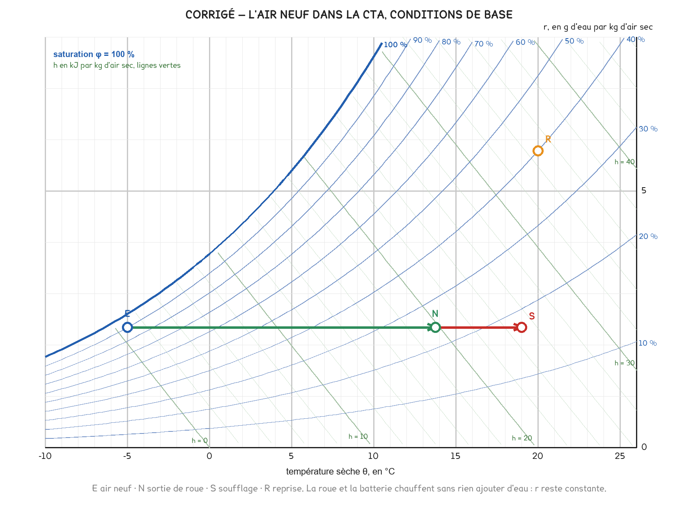
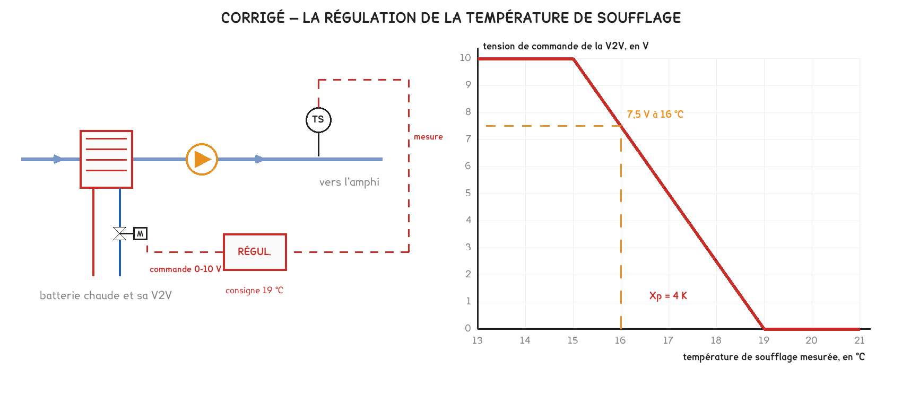

Document de formation du professeur — ne pas diffuser aux étudiants
Formation du professeur · BTS FED option C
Le corrigé barémé d'un exercice au format de l'épreuve : une centrale double flux à roue, l'air neuf réglé par le CO₂, le tracé d'hiver, la batterie avec et sans roue, le graphe de la V2V et la liste des points.
| Savoirs | Niveau DBC |
|---|---|
| B2-1 Ventilation, double flux | 3, maîtrise d’outils |
| A4-2 Évolutions de l’air, bilans | 3, maîtrise d’outils |
| B11 Régulation | 3, maîtrise d’outils |
| B8 Systèmes centralisés, GTB | 3, maîtrise d’outils |
| A4-1 Diagramme de l’air humide | 2 : expression |
UN CAS CONSTRUIT, PAS UN APPAREIL DU COMMERCE
L’amphithéâtre, la centrale et ses réglages sont inventés, sur le modèle des questions de CTA des sessions 2018, 2019, 2025 et 2026. Les valeurs sont calculées à la pression atmosphérique normale par
figs-exo-cta.py, qui trace aussi les figures : les lectures sur le DR3 tombent sur celles du corrigé. Ne pas les présenter comme des données constructeur.
| Moment | Ce qu’on en fait |
|---|---|
| Après les séances 17 et 18 | En entraînement, 1 h 15, les documents indiqués dans chaque question comme en début d’année |
| Après les séances 20 et 21 | La partie 4 seule, 25 minutes, pour relier la régulation à la liste des points |
| Avant les sujets complets des séances 24 et 26 | En autonomie chronométrée, puis correction croisée avec la grille de la séance 25 |
Minutage conseillé : 1 h 15. Parties 1 et 2 en 30 minutes, partie 3 en 20 minutes, partie 4 en 25 minutes. Les parties sont indépendantes : un étudiant bloqué sur le diagramme passe à la régulation.
Ce qu’on ne sacrifie jamais : les questions 9 et 12. La 9 fait passer du calcul au raisonnement de bureau d’études : une batterie petite parce que la roue fait l’essentiel, et un mode dégradé qui la protège. La 12 prend en défaut ceux qui ferment la vanne pour « protéger » la batterie, alors qu’il faut l’ouvrir en grand.
Barème indicatif, format des corrigés U41 depuis 2022 : chaque question est cotée de 0 à 3 selon le nombre d’éléments attendus présents. Éval 0 aucun, Éval 1 un élément, Éval 2 deux, Éval 3 tous.
1.
| Repère | Désignation | Fonction |
|---|---|---|
| 1 | Registre d’air neuf motorisé | Isoler la centrale de l’extérieur : fermé à l’arrêt, il empêche l’air froid de traverser la batterie par tirage naturel ; il se ferme aussi en mise en sécurité antigel |
| 3 | Roue de récupération | Préchauffer l’air neuf avec la chaleur de l’air repris, sans mélanger les deux flux |
| 5 | Thermostat antigel | Détecter un air trop froid en aval de la batterie et déclencher la mise en sécurité, avant que l’eau gèle dans les tubes |
| PD2 | Pressostat différentiel du filtre de reprise | Mesurer la perte de charge du filtre et signaler son encrassement |
Éléments attendus : la roue et le transfert de chaleur sans mélange · l’antigel et la protection de la batterie · le pressostat et l’encrassement du filtre. Le registre n’est pas exigé pour Éval 3. Confondre le thermostat antigel avec une sonde de régulation coûte un élément : il ne règle rien, il met en sécurité.
2. Le schéma surligné :

L’air neuf entre en bas à gauche, traverse le registre, le filtre et la roue ; au-delà de la roue, c’est de l’air soufflé. L’air repris quitte la salle en haut à droite ; au-delà de la roue, c’est de l’air rejeté.
Éléments attendus : les quatre flux distingués · la frontière des flux placée à la roue · les flèches. Un étudiant qui colore toute la veine du bas d’une seule couleur n’a pas vu que la roue change la nature de l’air : Éval 2 au plus.
3. L’air repris a la composition de l’air de la salle : son CO2 dit combien de personnes respirent dans l’amphithéâtre. L’air soufflé, lui, est de l’air neuf à environ 400 ppm, quelle que soit l’occupation : une sonde placée là mesurerait toujours la même chose.
Éléments attendus : l’air repris représente l’air de la salle · l’air soufflé n’a pas vu les occupants.
4. Débit maximal : 180 × 18 = 3 240 m³/h. La centrale fait 3 400 m³/h : elle convient en débit. Au débit maximal, les réseaux demandent 210 Pa au soufflage et 180 Pa à la reprise, pour 250 Pa disponibles : elle convient en pression.
Éléments attendus : 3 240 m³/h · la comparaison des débits · la comparaison des pressions. Oublier la pression est l’erreur la plus fréquente : un ventilateur qui a le débit mais pas la pression ne le délivre pas.
5. La loi tracée :

À 800 ppm : 1 000 + (3 240 − 1 000) × (800 − 600) / (1 000 − 600) = 2 120 m³/h.
Éléments attendus : le palier bas à 1 000 m³/h jusqu’à 600 ppm · le palier haut à 3 240 m³/h dès 1 000 ppm · la lecture à 800 ppm, entre 2 050 et 2 200 m³/h. Le palier haut placé à 3 400 m³/h, le débit de la centrale, coûte un élément.
6. Débit réglementaire : 90 × 18 = 1 620 m³/h, la moitié du débit maximal. Puissance d’un ventilateur : 1,5 × (1 620 / 3 240)³ = 1,5 / 8 ≈ 0,19 kW, contre 1,5 kW à plein débit.
Diviser le débit par deux divise la puissance des ventilateurs par huit. Un amphithéâtre rarement plein passe l’essentiel de son temps à débit réduit : c’est là que la variation de vitesse rapporte, et c’est ce que la sonde de CO2 permet.
Éléments attendus : 1 620 m³/h · 0,19 kW · la conclusion qui relie l’occupation à la consommation. Un étudiant qui applique la proportionnalité simple et trouve 0,75 kW n’a pas lu la loi du cube : Éval 1.
7. θN = −5 + 0,75 × (20 − (−5)) = 13,75 °C, arrondi à 13,8 °C.

| Point | θ, en °C | r, en g/kg | h, en kJ/kg |
|---|---|---|---|
| E, air extérieur | −5 | 2,3 | 0,8 |
| N, sortie de roue | 13,8 | 2,3 | 19,7 |
| S, soufflage | 19 | 2,3 | 25,0 |
La roue et la batterie chauffent l’air sans lui ajouter ni lui retirer d’eau : l’évolution est une horizontale, à r constante.
Éléments attendus : θN calculée · les trois points sur une même horizontale · les enthalpies lues à 1 kJ/kg près. Un point N placé plus haut, « parce que la roue récupère aussi de l’humidité », contredit le DT2, qui la dit non hygroscopique : Éval 2 au plus.
8. Débit massique : qm = 3 240 × 1,2 / 3 600 = 1,08 kg/s.
La roue fournit gratuitement près de 80 % de la chaleur que demande l’air neuf : sans elle, la batterie devrait être quatre à cinq fois plus puissante.
Éléments attendus : qm en kg/s · les deux puissances · la conclusion chiffrée. Accepter de 5,2 à 6,3 kW, selon la lecture des enthalpies. Le débit volumique pris pour un débit massique, 3 240 × 5,3, donne 17 000 « kW » : Éval 0 si l’étudiant ne le relève pas.
9. Sans la roue, à 1 000 m³/h : qm = 1 000 × 1,2 / 3 600 = 0,33 kg/s, et P = 0,33 × (25,0 − 0,8) ≈ 8,1 kW, sous les 9 kW installés : la batterie suffit en mode dégradé.
Le choix se justifie ainsi. Une batterie de 27 kW coûterait plus cher, avec une vanne et un débit d’eau trois fois plus gros, pour fonctionner tout l’hiver à 20 % de sa puissance, là où une vanne se règle mal. Le défaut de la roue est rare et se signale à la GTB : on accepte alors un débit réduit, le temps de la réparation, plutôt que de surdimensionner pour une panne.
Éléments attendus : 8,1 kW et la comparaison à 9 kW · le coût, ou le fonctionnement à faible charge, d’une grosse batterie · le mode dégradé accepté parce qu’il est temporaire et signalé.
10. et 11. La chaîne et le graphe :

La sonde TS mesure la température de soufflage ; le régulateur la compare à la consigne de 19 °C et élabore une commande de 0 à 10 V ; le servomoteur de la V2V règle le débit d’eau chaude dans la batterie. Quand TS mesure 16 °C : U = 10 × (19 − 16) / (19 − 15) = 7,5 V.
Éléments attendus, question 10 : capteur, régulateur, actionneur placés · les liaisons dans le bon sens · consigne, mesure et commande nommées. Éléments attendus, question 11 : les deux paliers · la droite entre 15 et 19 °C · 7,5 V. Un graphe croissant, la vanne qui s’ouvre quand l’air se réchauffe, est l’erreur de sens typique d’une batterie chaude : Éval 1.
12. Une situation : la chaufferie s’arrête, ou le circulateur de la batterie tombe en panne, par temps de gel ; ou la roue se bloque pendant que la V2V reste fermée par un défaut du servomoteur. L’air à −5 °C traverse alors une batterie dont l’eau ne circule plus : elle peut geler, et un tube qui gèle éclate.
La mise en sécurité, dans l’ordre : arrêt des ventilateurs ; fermeture des registres d’air neuf et de rejet, pour arrêter l’air froid ; ouverture de la V2V en grand, pour faire passer le plus d’eau chaude possible dans la batterie ; demande de chaleur à la chaufferie ; alarme à la GTB, et réarmement manuel une fois la cause trouvée.
Éléments attendus : une situation vraisemblable · l’arrêt de l’air froid, ventilateurs et registres · la V2V ouverte en grand · l’alarme. La V2V fermée « pour ne pas refroidir l’eau » est l’erreur à chercher : c’est l’inverse de ce qu’il faut, Éval 1 au plus.
13.
| Point | Nature du signal | Classe GTB |
|---|---|---|
| Température de soufflage TS | AI | TM |
| CO2 de la reprise | AI | TM |
| Pressostat du filtre d’air neuf PD1 | DI | TA |
| Thermostat antigel | DI | TA |
| Défaut de rotation de la roue | DI | TA |
| Marche et arrêt de la centrale | DO | TC |
| Consigne de soufflage, 19 °C | sans objet | TR |
Éléments attendus : les natures des six points physiques · leurs classes · la consigne en TR.
| Ce qu’on observe | Questions | Ce qu’on reprend |
|---|---|---|
| La roue coupe les flux : non vu | 2, 7 | Le schéma de la séance 17, un flux par couleur |
| Le débit massique confondu avec le volumique | 8, 9 | La masse volumique : 1,2 kg/m³, et l’unité de h |
| La pression disponible, ou la loi du cube, oubliée | 4, 6 | Le point de fonctionnement de la séance 9 ; un débit divisé par deux, une puissance divisée par huit |
| Le graphe de la V2V dans le mauvais sens | 11 | Une batterie chaude s’ouvre quand l’air refroidit |
| La V2V fermée en sécurité antigel | 12 | Ce qui gèle, c’est l’eau immobile |
| Le pressostat lu en entrée analogique | 13 | Un contact à seuil n’est pas une mesure : la liste des points de la séance 21 |
L'énoncé élève est le document Word EXO-CTA-AMPHI, dans BTS FED C/23-exercices-types.